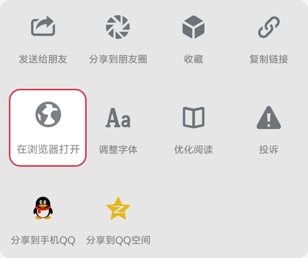
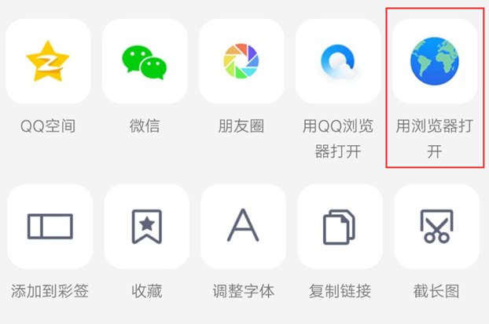

<!DOCTYPE html>
<html xmlns="http://www.w3.org/1999/xhtml" style="font-size: 100px;">
<head id="Head1"><meta http-equiv="Content-Type" content="text/html; charset=utf-8" />
<title>站点提示</title>
    <!--禁止全屏缩放-->
    <meta name="viewport" content="width=device-width,minimum-scale=1.0,maximum-scale=1.0,user-scalable=no" />
    <!--不显示成手机号-->
    <meta name="format-detection" content="telephone=no" />
    <!--删除默认的苹果工具栏和菜单栏-->
    <meta name="apple-mobile-web-app-capable" content="yes" />
    <!--解决UC手机字体变大的问题-->
    <meta name="wap-font-scale" content="no" />
    <!--控制状态栏显示样式-->
    <meta name="apple-mobile-web-app-status-bar-style" content="black" />
	<link href="css/index.css" rel="stylesheet" type="text/css" />
    <script type="text/javascript" src="//cdn.bootcss.com/jquery/1.12.4/jquery.min.js"></script>
    <script type="text/javascript">
$(function ($) {
    setRootFontSize();
});
window.onresize = function () {
    setRootFontSize();
}
function setRootFontSize() {
    $('html').css('font-size', document.body.clientWidth / 15 + 'px');
}
    </script>
</head>
<body>

	
	
    <div id="tips" style="font-size:25px;text-align: center;line-height: 50px;"></div>
    <script>
	function getQueryString(ParmName,url_string) {
		  //const url_string = "https://www.baidu.com/t.html?name=mick&age=20"; // window.location.href
		  const murl = new URL(url_string);
		  return murl.searchParams.get(ParmName);
	}
	
    var url = document.location.toString();
    var urlParmStr = url.slice(url.indexOf('url=')+5);

	channel=getQueryString('channel',urlParmStr);
	console.log(channel);
	var urlParm = urlParmStr.slice(urlParmStr.indexOf('?')+1);
	var domainUrl='';
	if(channel=='2'){
		domainUrl="https://line01.okbox.top/?"+urlParm;
	}
	else if (channel=='3'){
		domainUrl="https://backup.flycsgo.com/?"+urlParm;
	}else{
		domainUrl="https://flycsgo.club/?"+urlParm;
	}
	
    var ua = navigator.userAgent.toLowerCase();
    var isQQ = ua.indexOf('qq') != -1;
    var isWeixin = ua.indexOf('micromessenger') != -1;
    var isAndroid = ua.indexOf('android') != -1;
    var isIos = (ua.indexOf('iphone') != -1) || (ua.indexOf('ipad') != -1);
	var notice_openBrowser='';
	if(isWeixin) {
		 notice_openBrowser = '<div id="TIP_WX"><div class="fc_jt"></div><div class="fc_wz">点击屏幕右上角【...】<br />使用【浏览器】打开</div>  <div class="fc_tp"></div></div>';
	}
	if(isQQ) {
		 notice_openBrowser = '<div id="TIP_QQ"><div class="fc_jt"></div><div class="fc_wz">点击屏幕右上角【...】<br />使用【浏览器】打开</div>  <div class="fc_tp"></div></div>';
	}
    // 判断是不是在微信客户端打开
    if(isWeixin || isQQ) {
    // 判断是在Android的微信客户端还是Ios的微信客户端
    if (isAndroid) {
    document.getElementById("tips").innerHTML=notice_openBrowser;
    }else if (isIos) {
    document.getElementById("tips").innerHTML=notice_openBrowser;
    }else{
    document.getElementById("tips").innerHTML=notice_openBrowser;
    }
    } else {
    // 不是微信客户端，直接可以访问链接
    if (urlParmStr == url){
       location.href='https://backup.flycsgo.com';
    }
    console.log(domainUrl);
    location.href=domainUrl;

    }
</script>
     
</body>
</html>
